title Toutes Audio Vidéo Image Multimédia Publication Exposition Objet muséologique Audio Machine à revêtement Getter par décharge cathodique par : Cnes Expo Maths en jeux par : Cnes 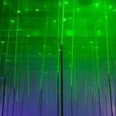 Multimédia L'interaction Laser-matière par : Cnes 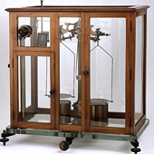 Objet Balance de Curie par : Cnes Image Fleur de vipérine faux-plantain par : Cnes 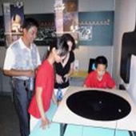 Expo EXPLORER L'UNIVERS Nos prochains pas par : Cnes Expo Addictions, plaisirs amers par : Cnes 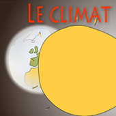 Multimédia Le climat de la terre par : Cnes 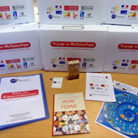 Outil Voyage en Mathématique par : Cnes 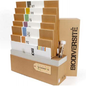 Outil Biodiversité par : Cnes 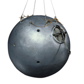 Objet Nacelle de ballon stratosphérique par : Cnes 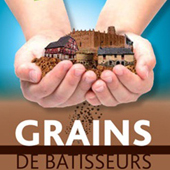 Fiche Expo Grains de batisseurs par : Cnes Objet Balance de Curie par : Cnes 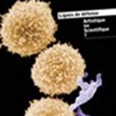 Fiche Expo Artistique ou scientifique ? par : Cnes 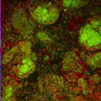 Image Carcinome épidermoïde par : Cnes 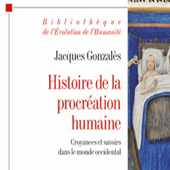 Conférence Histoire de la procréation humaine par : Cnes 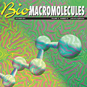 Publication Biomacromolecules Publication XML Conférences Web 3.0 avec PHARO